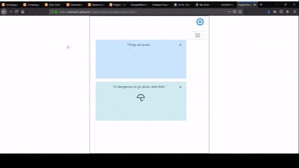
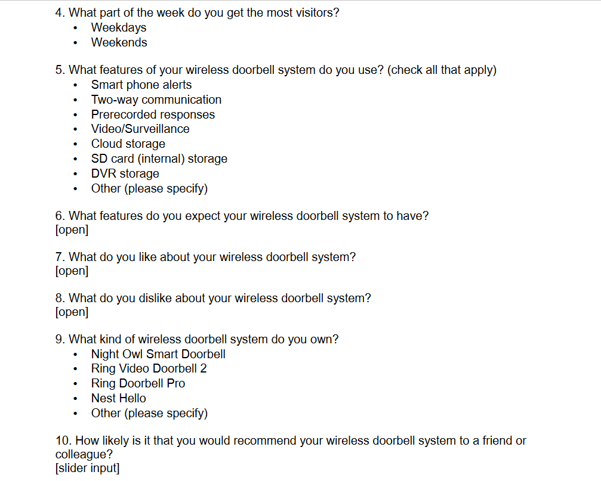
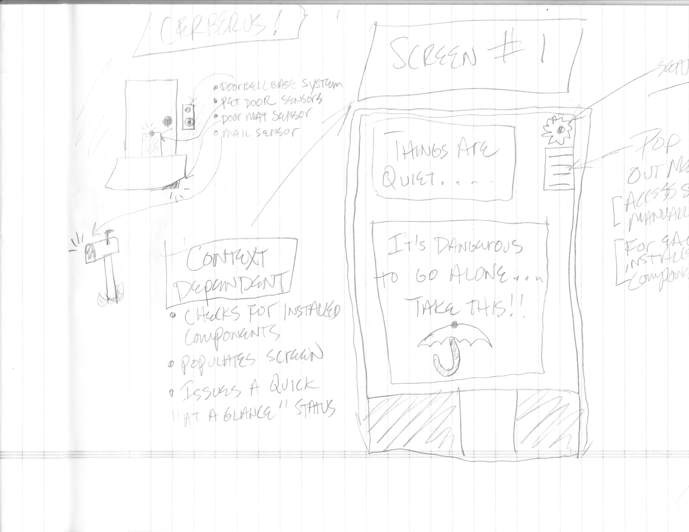
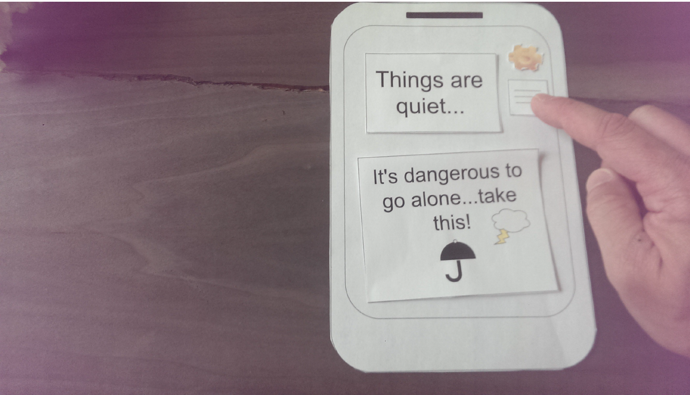
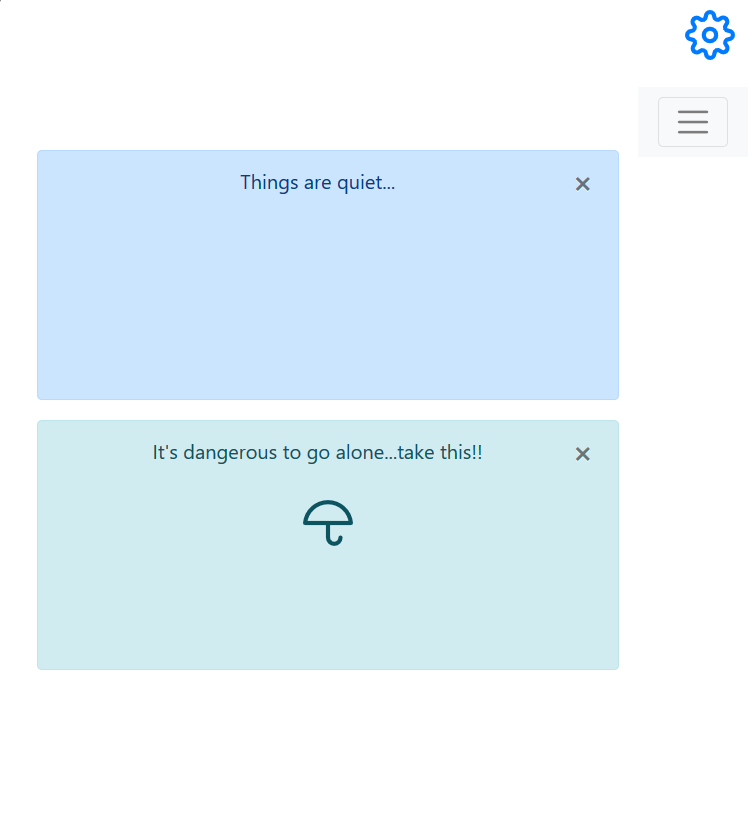

Your browser doesn't support the features required by impress.js, so you are presented with a simplified version of this presentation.
For the best experience please use the latest Chrome, Safari or Firefox browser.





Cerberus
Wireless Doorbell System Prototype
SWE 6783 - UCD Project
Project Cerberus - Summary
Project Cerberus is a prototype of a wireless doorbell system, which aims to:
- Be Highly usable.
- Make improvements on personal interactions through data-driven features.
- Serve its purpose in discovering ways wireless doorbell systems can maximize the quality of personal interactions through design.
- Achieve its goal to leverage research to design a prototype demonstrating how better, data-driven design can benefit consumers of wireless doorbell systems by meeting their expectations and anticipating their future needs.
Research
- Research began by asking the main design question:
- How can wireless doorbell systems be designed to leverage consumer interactions and information in the environment to provide more value to consumers?
- Furthermore, research was performed to answer these specific questions:
- Who is visiting consumers at the door?
- Why are they making a visit?
- When do these visits occur?
- What information is available in the consumer environment relevant to these
interactions?
- How do consumers use their wireless doorbell systems?
- What kind of features do consumers expect their wireless doorbell systems to have?
- How can wireless doorbell systems be designed to anticipate the future needs of
consumers?
Research Results - At a Glance
Structured Interviews
- Asked the following questions:
- How often are you at home?
- What is your daily routine?
- What features of your wireless doorbell system do you use?
- Resulted in three consumer profiles:
- Sophisticated Shut-in
- Practical Busybody
- Sophisticated Socialite
Research Results - At a Glance
Online Survey
An online survey was constructed on SurveyMonkey to ask participants about the wireless doorbell systems they own, their home environment, their daily routine, the type and nature of their interactions at home, and their expectations for wireless doorbell systems in general.
- Resulted in the following insights:
- Pet detection feature
- Doorbell silencing feature
- Mail and Package alert features
- Local storage of media
Design & Evaluation - Sketching
Sketches of the product were made and refined, which resulted in a clean layout including:
- Home screen
- Main menu
- Settings screens for video, pets, mail, and packages
- Status screens for video, pets, mail, and packages
Design & Evaluation - Paper Prototype
A paper prototype was made, followed up by testing and feedback from participants:
- Paper prototype was slow, laborious to test
- impacted ability to recall actions taken
- impacted their ability to reason about their interactions
- Prototype made sense overall, but better evaluated digitally
- Of course...the project owner's ability to prototype with paper may have been a factor ;)
Design & Evaluation - Digital Prototype
A digital prototype was made, followed up by more testing and better feedback from participants:
- Remove package settings - they make no sense!
- Mail and package alerts are all they want in this feature
- No easy way to integrate package delivery data from vendor sources (that I'm aware of)
- More research would be needed in order to make this work properly
- Remove the automatic network settings!
- Keep manual method only...
- Network setup always requires manual entry of information anyhow...
- Pet information screen isn't too useful!
- Most participants had one pet...or no pets
- ...which is why I kept it as a feature.
- Give us a visual cue to tell us the pet detection feature is active!
Design & Evaluation - Implementation
The implementation of the system followed with yet more testing and more refined feedback from participants:
- Sufficiently simple to use and straight-forward
- Some disappointment with format - not live with hardware and phone application wired up.
- ...which would have taken much longer for me to implement
- Still, this made it a mostly successful prototype :)
Analysis - What went well?
- Overall design and evaluation phases were enjoyable and productive.
- UCD process added a lot of value - data, features, revision, etc.
...and not so well!
- Paper prototype seemed to be the least useful aspect of this project - probably my fault since it's my first paper prototype.
- Complexity of the project and new technologies and skills required in a compressed time frame made a fully functional implementation of the idea mostly impossible.
- Lead to a limited amount of value in the research performed - no interaction with an actual doorbell system with the outlined features.
Analysis - What would I do differently?
- Take more time to perform research - low research participation makes moving forward on a project that has not proven its value unjustifiable from a business perspective.
- Create more opportunity for testing and research by building more prototypes - including full hardware prototypes.
Project Recap - Context
- Wireless doorbell systems in a residential environment.
- My interest in the project was for the purposes of developing both an embedded software product using micro controllers (Atmel AVR chips and components) and a phone application to drive it.
Project Recap - Design & Research Questions
- Design was based on data collected from participants and competitive analysis
- Enabled me to identify best practices and discover insights into what consumers want and expect in a wireless doorbell system.
- Upon completing the project...
- My design question was answered
- Identified ways to leverage information in the consumer environment
- Made a prototype of a wireless doorbell system that improved interactions with that environment.
- My research was productive
- Answered questions related to consumer wants - incompletely due to the nature of the problem.
- Confirmed best practices and expectations - standard across devices according to my research.
Defining Success
Overall...I'd say it was a success because:
- I learned a lot about the UCD process.
- I discovered that I liked the process.
- I was able to follow through and complete many things.
- It gives me a great framework with which to develop future projects in a more structured, reasoned way.
Future Directions
I plan to move forward with and complete the project due to my overwhelmingly positive experience.
- I will devote time to learning how to program and prototype embedded projects - AVR micro controllers and interfacing sensors and other components with environmental data to build useful devices.
- I also believe the UCD process yielded good results - I plan to use it extensively in the future.